| 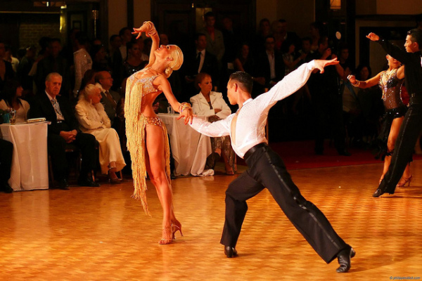 |
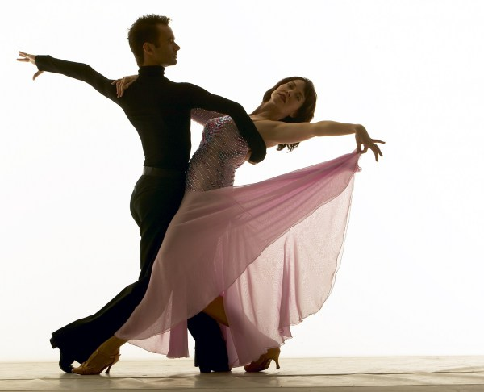 |
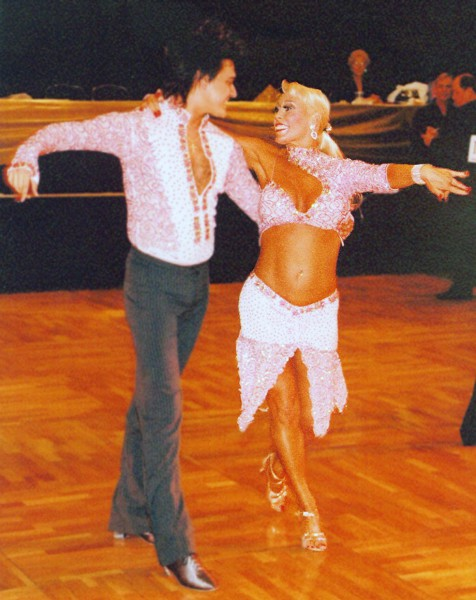 |
|
Во всём танцевальном мире соревнования по спортивным танцам делятся на 2 программы:
1. европейскую (Standard, Modern или Ballroom)
2. латиноамериканскую (Latin)
Медленный вальс ⚝
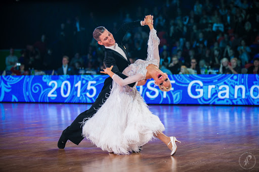
Медленный вальс - один из самых плавных бальных танцев. Он характеризуется длинными, «текучими» движениями, непрерывными поворотами и «подъемами и падениями». Танец настолько изящный, что кажется, будто исполнители скользят по полу почти без усилий.
Квикстеп
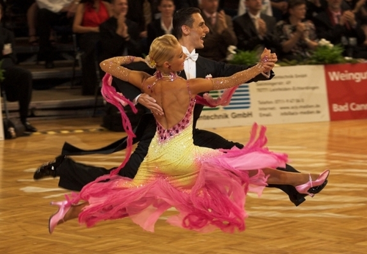
Квикстеп представляет собой быструю версию фокстрота. Это бальный танец, состоящий из чрезвычайно быстрых движений, синкопированных ритмов ног и быстрых шагов. За исполнителями квикстепа всегда интересно наблюдать, но он является одним из самых сложных бальных танцев.
Венский вальс
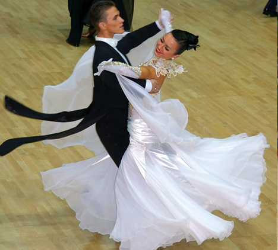
Венский вальс - бальный танец, который изобилует быстрыми вращениями, а также изящными взлетами и падениями. Считается, что это один из самых сложных танцев для изучения. Элегантные кружащиеся пары являются «визитной карточкой» венского вальса.
Танго ❦
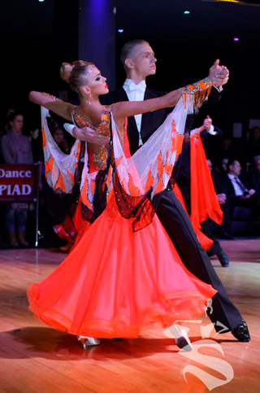
Танго - одно из самых увлекательных бальных танцев. Этот чувственный бальный танец возник в Южной Америке в начале двадцатого века.
Фокстрот
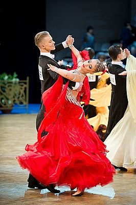
Фокстрот - это бальный танец, который очень забавный и простой в изучении. Поэтому он является отличным танцем для новичков. Фокстрот - это плавный танец, в котором исполнители совершают длинные и «текучие» движения по полу.
Самба
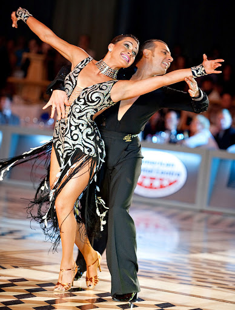
Возможно, это самый популярный из всех бразильских бальных танцев. Самба популярна как среди молодежи, так и среди людей старшего поколения. Ее можно танцевать как соло, так и с партнером.
Ча-ча-ча
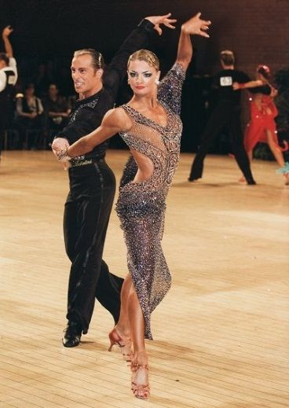
Ча-ча-ча - оживленный, кокетливый бальный танец, полный страсти и энергии. Классические «кубинские движения» придают ча-ча-ча их неповторимый стиль. Партнеры в нем должны немало потренироваться вместе, чтобы идеально синхронизировать каждое движение.
Румба ❤
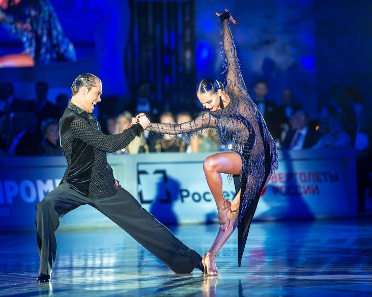
Многие считают, что румба является самым романтичным и чувственным латиноамериканским бальным танцем. Ее часто называют «Дедушкой латиноамериканских танцев».
Пасодобль
 Пасодобль - один из самых оживленных бальных танцев, ведущий свое происхождение с юга Франции. Он моделирует звуки, драму и движения испанского боя быков.
Пасодобль - один из самых оживленных бальных танцев, ведущий свое происхождение с юга Франции. Он моделирует звуки, драму и движения испанского боя быков.
Джайв
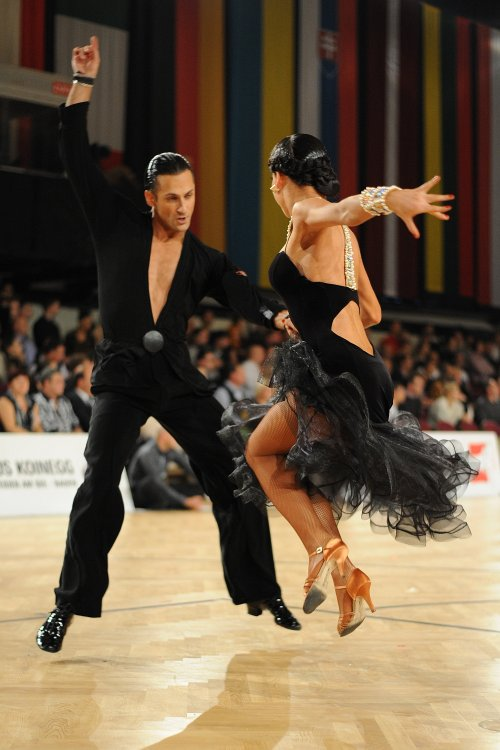
Джайв - это стиль бальных танцев, возникший в Соединенных Штатах в среде афро-американцев. Это более оживленная форма свинга и джиттербурга.